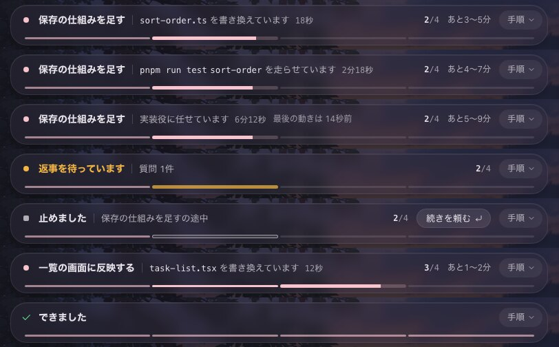
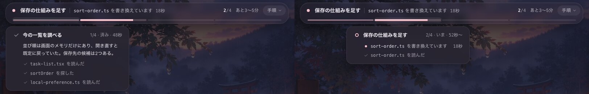
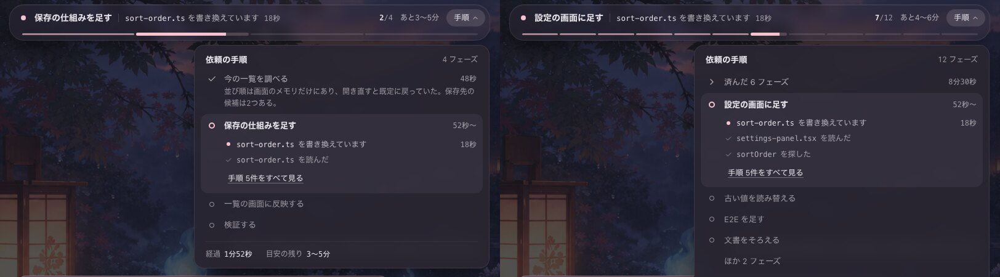
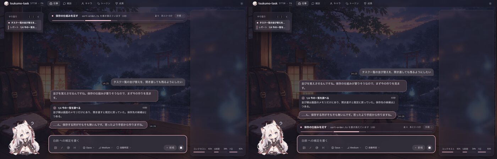

フェーズが多くても、下線を細かく割るだけで済む
下線はフェーズの数で等分するだけなので、4でも12でも長さは同じで、字は1つも詰まらない。番号の丸・「✓n」・「あと n」・群の名は要らなくなる。12フェーズでも区間は1つ 60px ほどあり、太い今の区間がどこかは一目で分かる。

決まりと工数を外して、作業を待つ人が何を知りたいかから組み直した案。番号つきの丸の並びをやめ、ピルの下線そのものを進み具合にする。ピルは「今のフェーズ｜いまの手順の一文」と「位置・目安の残り」を1行で言う。下線の区間を押すとそのフェーズの詳細、右端の「手順」を押すと全体の詳細が重なって出て、外を押すと閉じる。
エージェントが働くあいだ、利用者はときどきピルを見て、次の問いのどれかを確かめる。ピルはどの問いにも、目を動かさずに読める1か所で答え、同じことを2か所では言わない。
| 問い | ピルの答え | 根拠 |
|---|---|---|
| 動いている？ | 今の区間の中を線が始端から終端へ伸び続け、手順の秒が毎秒進む | 待ちの表示は「処理が続いている」という不安を減らす（nngroup.com） |
| いま何をしている？ | 「sort-order.ts を書き換えています」の一文。手順が替わると、古い文が上へ抜けて新しい文が下から入る | 働いている様子が見えると、待ちが同じでも結果を高く感じる（Buell・Norton 2011、econbiz.de） |
| どこまで進んだ？ | 下線の塗り（フェーズの数で等分し、今の区間だけ太い）と「2/4」 | 10秒を超える待ちには、進んだ割合の表示を（uxtigers.com） |
| あとどれくらい？ | 「あと3〜5分」。済んだフェーズの所要の幅から出す目安なので、1つの数ではなく幅で言う。フェーズが済むたびに幅が縮む | 同じ記事。表示は止まらず、嘘をつかず、巻き戻らないこと |
| 私の出番？ | 灯りと見出しと下線の今の区間が琥珀になり「返事を待っています｜質問 1件」。答えるボタンは、入力欄のそばの質問の札にだけ置く | 色と語の2つで言うので、色だけに頼らない |
| 終わった？ 留守のあいだは？ | 完了は灯りが緑のチェックになり、下線が差し色で満ちて「できました」。離れていたあいだに済んだ区間は濃く塗って残す。ブラウザのタブの題も「2/4 保存の仕組みを足す」「返事待ち」「できました」と替わる | 流れを遡らなくても、別のタブにいても、何が変わったかが分かる |
左から、灯り・今のフェーズ・いまの手順の一文と秒。右端に寄せて、位置・目安の残り・「手順」ボタン。下線は全フェーズを等分した進み具合。色は灯りと下線にだけ乗せ、字は白の濃淡で段を付ける。
1400 の幅で、上から働く・長く掛かる・委譲を待つ・答え待ち・止めた・離れて戻った・完了。ボタンが出るのは、止めたときの「続きを頼む」だけ（ほかの場面でするべきことは、質問の札やレポートのそばにある）。

下線の区間を押すと、押した区間の下にそのフェーズの詳細が出る。済んだフェーズはまとめと手順、今のフェーズは走っている手順と直前の手順、まだのフェーズは名前と「これから」。右端の「手順」を押すと、ピルの右端にそろえて全体の詳細が出る。済んだフェーズにはまとめを1〜2行で添え、今のフェーズの行の中に手順を並べ、下端に依頼全体の経過と目安の残りを置く。どちらも詳細の外を押すか Esc で閉じ、ピルの行は開いているあいだも替わらない。


下線はフェーズの数で等分するだけなので、4でも12でも長さは同じで、字は1つも詰まらない。番号の丸・「✓n」・「あと n」・群の名は要らなくなる。12フェーズでも区間は1つ 60px ほどあり、太い今の区間がどこかは一目で分かる。

| 案A | 新案 | |
|---|---|---|
| 位置 | 番号つきの丸と線の並び | 下線の塗りと「2/4」 |
| いまの手順 | 回る印・動詞・対象（「書き換えている sort-order.ts」） | 一文（「sort-order.ts を書き換えています」） |
| 時間 | 依頼全体の経過 | 手順の秒と目安の残り。経過は全体の詳細の下端 |
| 手順の一覧 | 「手順 n件」で、帯の下に別の面 | 区間を押すとそのフェーズ、「手順」を押すと全体の詳細が重なって出る |
| 答え待ち | 帯と、入力欄の上の帯の2か所 | ピルの1か所（答えるボタンは質問の札にだけ） |
| 高さ | 40px | 58px（下線のぶん） |
transform だけを動かす）。答え待ち・止めた・完了では動かないので、「止まっている」ことも動きの有無で分かる。動きを減らす設定では、今の区間の線を半分まで伸びた形で止め、入れ替え・着地・詳細の出入りを止める。秒の進みだけを残す。灯りは点滅させない。
ピルの中身はどちらも同じで、違うのは置く場所と詳細の出る向きだけ。どちらも左右の端を入力欄にそろえた。上端の形は、流れがピルの下に潜るところをぼかす。利用者は、最新のセリフと入力欄のあいだに何も挟まない上端を採った。

| 上端（?form=e） | 入力欄の真上（?form=e&place=dock） | |
|---|---|---|
| 最新のセリフとの距離 | 画面の高さぶん離れる（1400×900 で約 600px） | セリフのすぐ下で、入力欄の上。目を上下に動かさない |
| セリフと入力欄のあいだ | 何も挟まない | ピルが挟まる。ただし浮いた1行ではなく、入力欄と同じ面の部品として据わる |
| 詳細 | 下へ出て、流れの上の方に重なる | 上へ出て、流れの下の方（最新のセリフ）に重なる |
| 流れの見える量 | 上端に 76px の余白 | 入力欄の上に 66px（ピルの高さと間） |
?place=dock）を足し、2つを並べた。